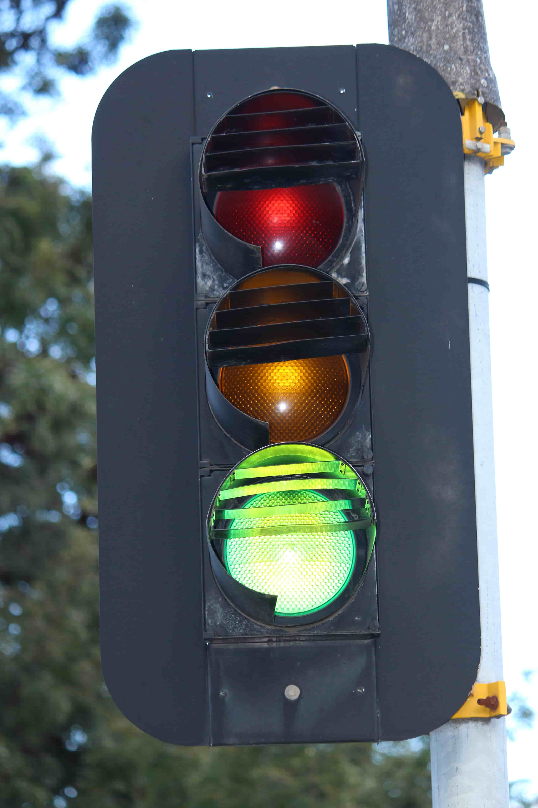
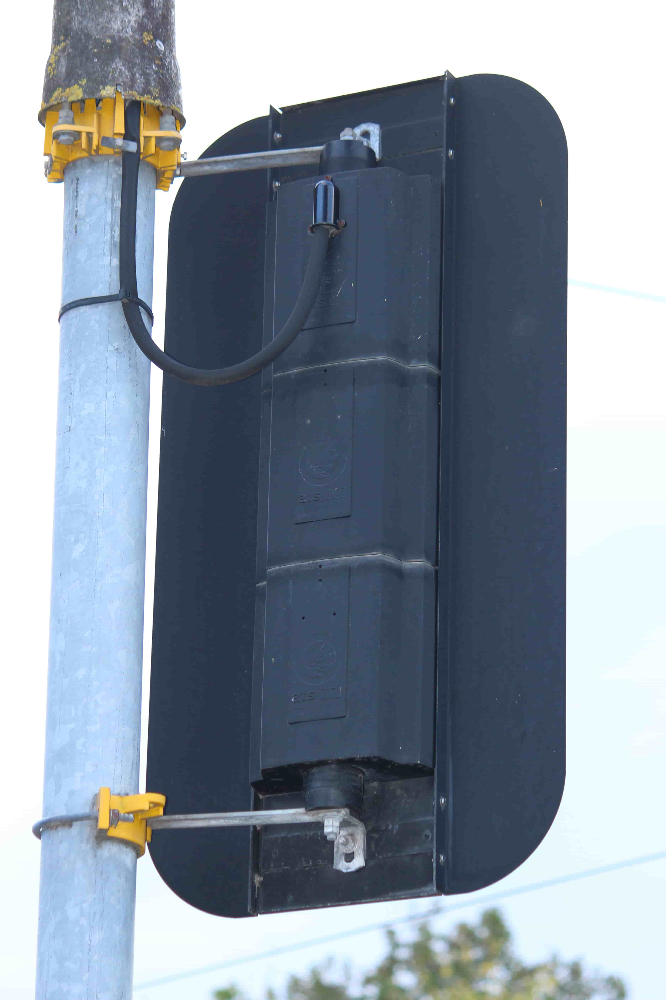
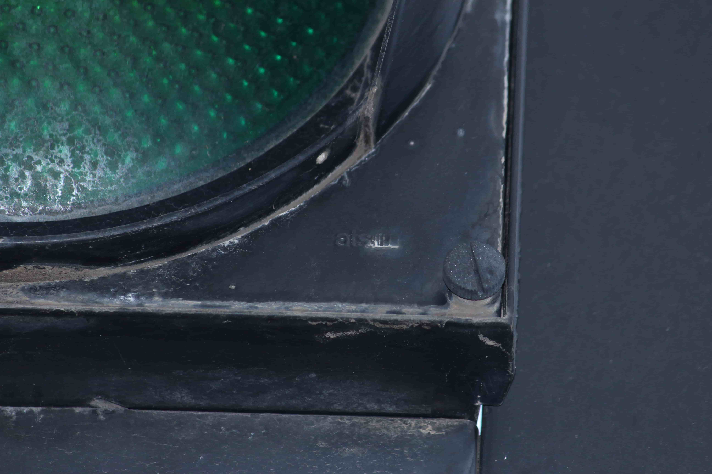
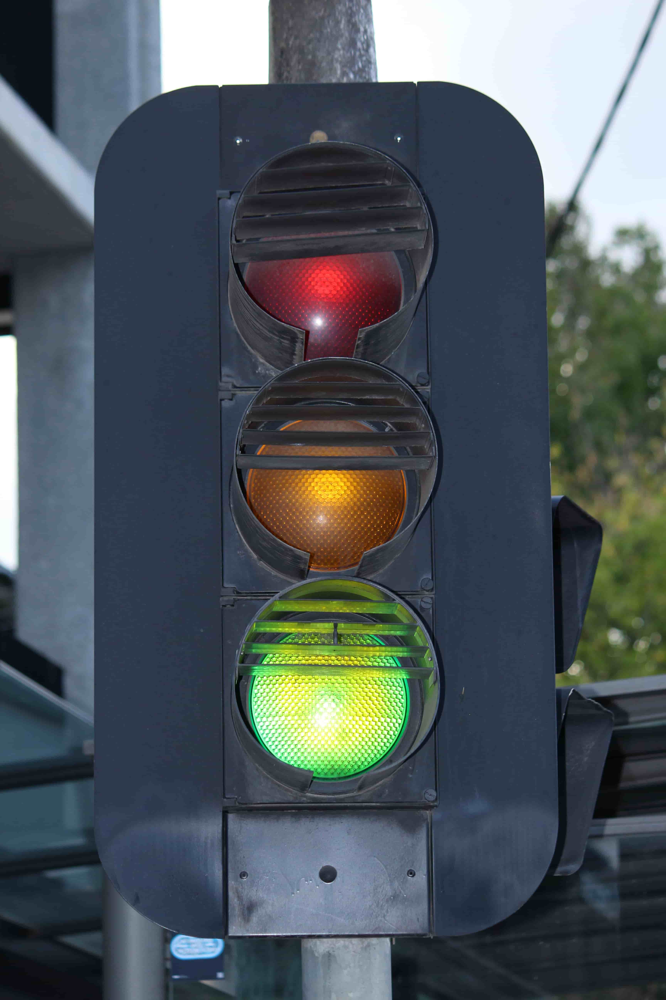
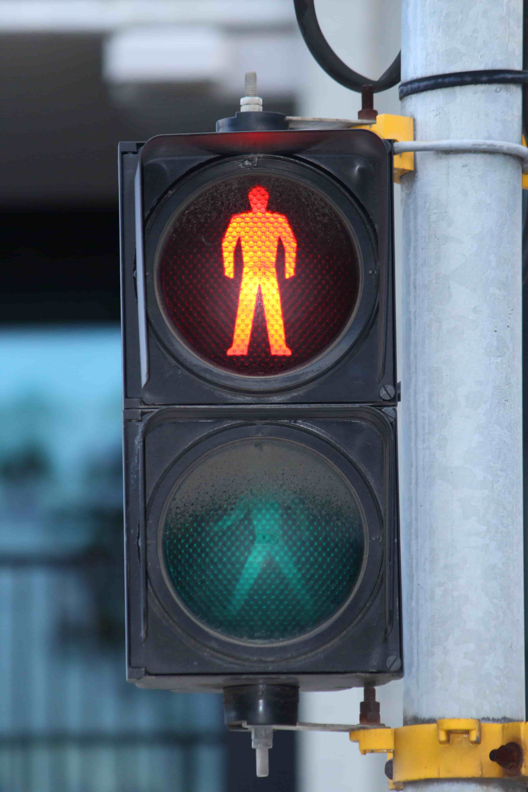
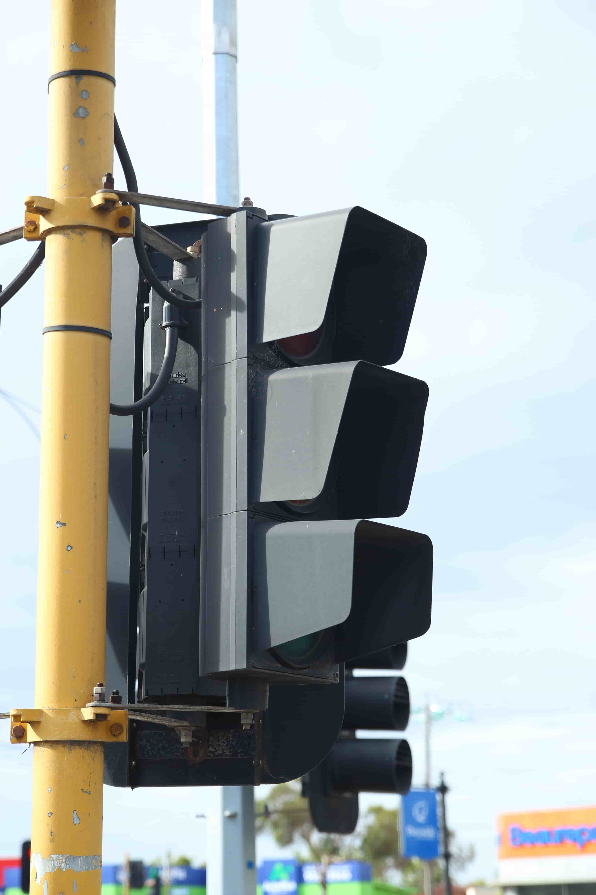

One of the 3 oldest styles of ATS incandescent lights. These have a distinct flat profile, and are made from aluminium. The lenses have the 'ATS' logo embossed in the centre.
Looking from the front, these look identical to the other 3 ATS light designs from this era.
These lenses are also what AWA used on their later lights.
12" variants of this light did exist, although they have only been documented to have been used on the Victorian Railway network as route indicators. They are believed to no longer remain in service.
| Front View | Back View | Close up |
|---|---|---|
|  |  |  |
| Yarra St/Burwood Rd, Hawthorn, VIC - Will get a better back view in the future. | ||
| Ball signal | Pedestrian signal | Bike signal |
|---|---|---|
|  |  |  |
| Also at Yarra St/Burwood Rd, Hawthorn, VIC. | Cummins Rd/Nepean Hwy, Brighton East, VIC. The bike lenses aren't visible - Just imagine they exist :P (Will get a better pic in the future) |
|
{kind=link}
{kind=link}
{kind=link}
{kind=link}
{kind=link}
{kind=link}